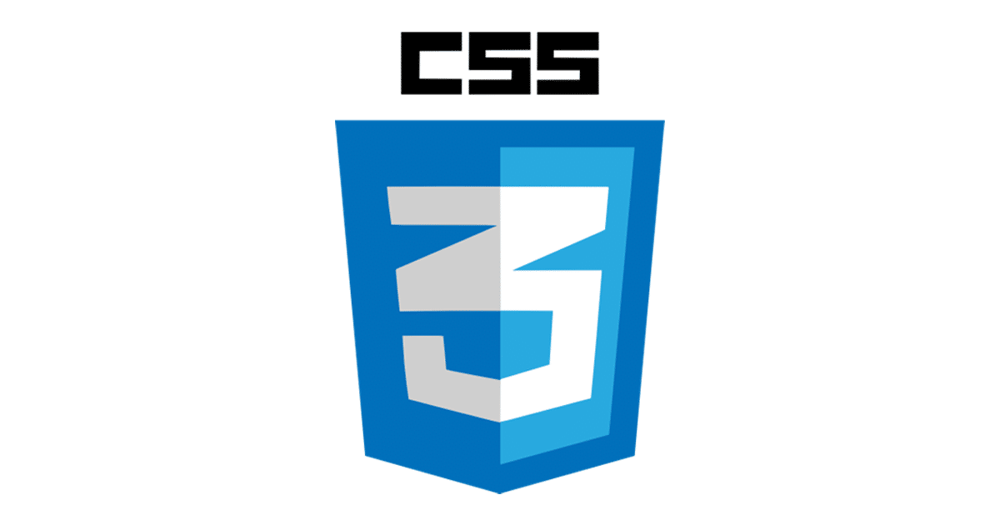
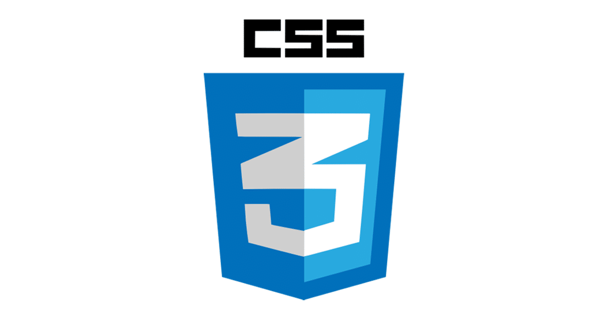
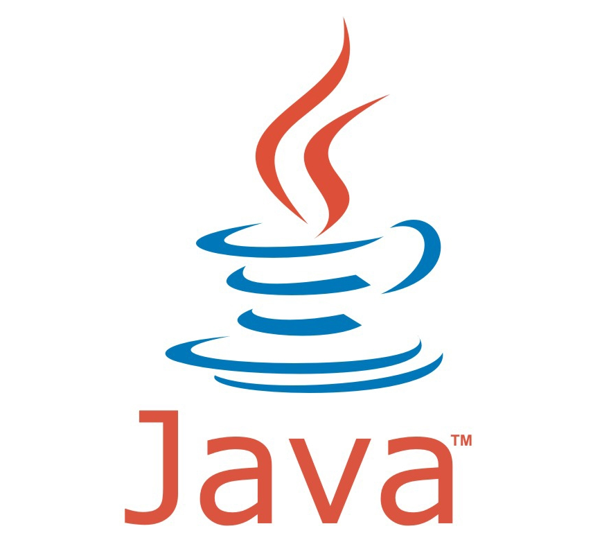
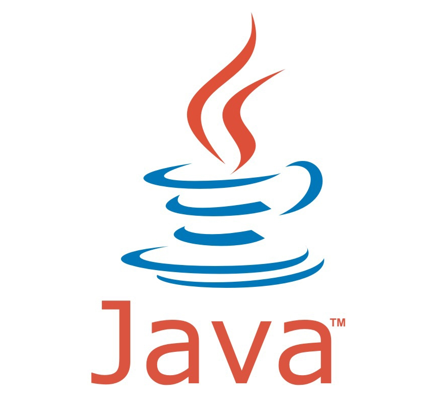

Your coding journey starts here !
 

 



HTML and CSS
HTML
HTML (HyperText Markup Language) is the most basic building block of the Web. It defines the meaning and structure of web content. Other technologies besides HTML are generally used to describe a web page's appearance/presentation (CSS) or functionality/behavior (JavaScript).
"Hypertext" refers to links that connect web pages to one another, either within a single website or between websites. Links are a fundamental aspect of the Web. By uploading content to the Internet and linking it to pages created by other people, you become an active participant in the World Wide Web.
HTML uses "markup" to annotate text, images, and other content for display in a Web browser. HTML markup includes special "elements" such as <head>, <title>, <body>, <header>, <footer>, <article>, <section>, <p>, <div>, <span>, <img>, <aside>, <audio>, <canvas>, <datalist>, <details>, <embed>, <nav>, <output>, <progress>, <video>, <ul>, <ol>, <li> and many others.
An HTML element is set off from other text in a document by "tags", which consist of the element name surrounded by "<" and ">". The name of an element inside a tag is case insensitive. That is, it can be written in uppercase, lowercase, or a mixture. For example, the title tag can be written as Title, TITLE, or in any other way.
Our HTML Learning Area features multiple modules that teach HTML from the ground up — no previous knowledge required.
If you're new to Web development, be sure to read our HTML Basics article to learn what HTML is and how to use it.

CSS
Cascading Style Sheets (CSS) is a stylesheet language used to describe the presentation of a document written in HTML or XML (including XML dialects such as SVG, MathML or XHTML). CSS describes how elements should be rendered on screen, on paper, in speech, or on other media.
CSS is among the core languages of the open web and is standardized across Web browsers according to W3C specifications. Previously, development of various parts of CSS specification was done synchronously, which allowed versioning of the latest recommendations. You might have heard about CSS1, CSS2.1, CSS3. However, CSS4 has never become an official version.
From CSS3, the scope of the specification increased significantly and the progress on different CSS modules started to differ so much, that it became more effective to develop and release recommendations separately per module. Instead of versioning the CSS specification, W3C now periodically takes a snapshot of the latest stable state of the CSS specification. Key resources
If you're new to web development, be sure to read our CSS basics article to learn what CSS is and how to use it.
javascript
JavaScript (JS) is a lightweight, interpreted, or just-in-time compiled programming language with first-class functions. While it is most well-known as the scripting language for Web pages, many non-browser environments also use it, such as Node.js, Apache CouchDB and Adobe Acrobat. JavaScript is a prototype-based, multi-paradigm, single-threaded, dynamic language, supporting object-oriented, imperative, and declarative (e.g. functional programming) styles. Read more about JavaScript.
This section is dedicated to the JavaScript language itself, and not the parts that are specific to Web pages or other host environments. For information about API specifics to Web pages, please see Web APIs and DOM.
The standards for JavaScript are the ECMAScript Language Specification (ECMA-262) and the ECMAScript Internationalization API specification (ECMA-402). The JavaScript documentation throughout MDN is based on the latest draft versions of ECMA-262 and ECMA-402. And in cases where some proposals for new ECMAScript features have already been implemented in browsers, documentation and examples in MDN articles may use some of those new features.
Do not confuse JavaScript with the Java programming language. Both "Java" and "JavaScript" are trademarks or registered trademarks of Oracle in the U.S. and other countries. However, the two programming languages have very different syntax, semantics, and use.
Head over to our Learning Area JavaScript topic if you want to learn JavaScript but have no previous experience with JavaScript or programming. The complete modules available there are as follows:
JavaScript frameworks are an essential part of modern front-end web development, providing developers with proven tools for building scalable, interactive web applications. This module gives you some fundamental background knowledge about how client-side frameworks work and how they fit into your toolset, before moving on to tutorial series covering some of today's most popular ones.
Get to know standard built-in objects Array, Boolean, Date, Error, Function, JSON, Math, Number, Object, RegExp, String, Map, Set, WeakMap, WeakSet, and others.
Learn more about the behavior of JavaScript's operators instanceof, typeof, new, this, the operator precedence, and more.
Learn how do-while, for-in, for-of, try-catch, let, var, const, if-else, switch, and more JavaScript statements and keywords work.
Learn how to work with JavaScript's functions to develop your applications

Java
Java is a programming language and computing platform first released by Sun Microsystems in 1995. It has evolved from humble beginnings to power a large share of today’s digital world, by providing the reliable platform upon which many services and applications are built. New, innovative products and digital services designed for the future continue to rely on Java, as well.
There are many applications and even some websites that will not function unless you have Java installed. Java.com, this website, is intended for consumers who require Java for their desktop applications – specifically applications targeting Java 8. Developers as well as users that would like to learn Java programming should visit the dev.java website instead and business users should visit oracle.com/java for more information.
Java is free to download for personal use. Get the latest version at java.com.Java is also free for development: developers can find all the development kits and other useful tools at https://www.oracle.com/javadownload/.
The latest Java patches contain important enhancements to improve performance, stability and security of the Java applications that run on your machine. Installing these updates will ensure that your Java applications continue to run with the most up-to-date version.
The Java Runtime Environment (JRE) version 8 is what you get when you download Java software from java.com.
The JRE consists of the Java Virtual Machine (JVM), Java platform core classes, and supporting Java platform libraries. The JRE is the runtime portion of Java software, which is all you need to run Java WebStart applications from a supported web browser. It doesn’t come with development tools, though – these tools are part of the Java Development Kit (JDK).
The Java Plug-in software is a component of the Java Runtime Environment (JRE). The JRE allows some applications written in the Java programming language to launch via some browsers. The Java Plug-in software is not a standalone program and cannot be installed separately.
The Java Virtual Machine is only one part of Java software that is involved in running an application. The Java Virtual Machine is built right into your Java software download, part of the JRE and helps run Java applications.
Java is one of the most widely used programming languages, Java is used as the server-side language for most back-end development projects, including those involving big data and Android development.
Java is also commonly used for desktop computing, other mobile computing, games, and numerical computing. The popularity of Java is further evidenced with 90% of all Fortune 500 companies using Java.
PHP
PHP is a server-side and general-purpose scripting language that is especially suited for web development.
PHP originally stood for Personal Home Page. However, now, it stands for Hypertext Preprocessor. It’s a recursive acronym because the first word itself is also an acronym.
PHP was created by Rasmus Lerdorf in 1994. It’s currently maintained by the PHP Development Team.
When you open a website on your web browser, for example, https://www.phptutorial.net
The web browser sends an HTTP request to a web server where phptutorial.net locates. The web server receives the request and responds with an HTML document.
In this example, the web browser is a client while the web server is the server. The client requests for a page, and the server serves the request.
PHP runs on the web server, processes the request, and returns the HTML document.
When it comes to the purpose of the programming languages, there are two main types: domain-specific and general-purpose languages.
The domain-specific languages are used within specific application domains. For example, SQL is a domain-specific language. It’s used mainly for querying data from relational databases. And SQL cannot be used for other purposes.
On the other hand, PHP is a general-purpose language because PHP can develop various applications.
Python
Python is a popular general-purpose programming language that can be used for a wide variety of applications. It includes high-level data structures, dynamic typing, dynamic binding, and many more features that make it as useful for complex application development as it is for scripting or "glue code" that connects components together. It can also be extended to make system calls to almost all operating systems and to run code written in C or C++.
Due to its ubiquity and ability to run on nearly every system architecture, Python is a universal language found in a variety of different applications. Python is an interpreted, interactive, object-oriented programming language. It incorporates modules, exceptions, dynamic typing, very high level dynamic data types, and classes. —Python Software Foundation FAQ
First developed in the late 1980s by Guido van Rossum, Python has advanced as an open source programming language by managing public discussion through Python Enhancement Proposals (PEPs). In 2018, van Rossum stepped down as the language's Benevolent Dictator For Life (BDFL), and, as officially outlined in PEP 13, a steering council was put in place to serve as the leadership of the language.
The Python Software Foundation (PSF) is a 501(c)(3) non-profit corporation that holds the intellectual property rights behind the Python programming language. This includes Python version 2.1 and later, PyPI, the CPython reference implementation, and infrastructure to maintain the language. The PSF also provides grants for software craftship and runs multiple PyCon conferences a year.
all modern versions of Python are copyrighted under a GPL-compatible license certified by the Open Source Initiative. The Python logo is trademarked but allows for customization (see the full license for details). You can download the Python source code here.
There are several reasons why Python is a good choice as a programming language, depending on your perspective and background.
Those new to programming can benefit from Python's high level of abstraction. It is highly interactive and known for its "strong opinions" around specific syntax (including whitespace). Python, like other high-level languages, has a garbage collection process to manage memory or delete unused resources. A user can receive instant feedback from the interpreter by typing python on the command line or by using projects like JupyterLab if they want a browser-based development experience. Many users also appreciate that Python has a strict syntax enforced by the compiler, making it easy to have a single "right way" to write a program. That style of development is reinforced through The Zen of Python:
Perhaps most importantly, Python has an enormous user community. Python's popularity is both a cause and an effect of its community. It was the #1 programming language in 2018, according to the IEEE Spectrum ranking, and it is the #1 "Most Wanted" and #2 "Most Loved" language, according to StackOverflow's 2019 Developer Survey. Pythonistas, as members of the community call themselves, meet around the world in thousands at PyCon conferences.>
This means that no matter what problem you're trying to solve, chances are there are already strong people working on a solution. Chances are also good that they have shared code, documentation, tutorials, and examples to help program a solution in Python. There are numerous IDEs and other development tools to choose from, and thousands of open source packages available to extend Python to do just about anything you can think of.